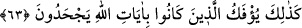
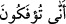
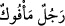
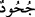

Arapçası itibarıyla) önce geçenler sonra eklenenleri tahsîs ve takrîr etmektedir.
Keşfü’l-esrâr’da der ki: “Herşeyin yaratıcısı” ifadesindeki “her”, “bazı”
anlamındadır. “Her” kelimesinin, yaratma kapsamına girmeyenlerin istisnâ edildiği âmm
bir lafız olduğu da söylenmiştir.[200]
“O halde,” sadece O’na kulluk etmekten “nasıl olup da” ve ne gibi bir gerekçeyle
başka şeylere de kulluk etmeye “döndürülüyorsunuz?”
63. Allah’ın âyetlerini inatla inkâr edenler işte (haktan) böyle döndürülür.
Tıpkı onca delil getirildiği halde, senin kavmin Kureyş’in “gerçek”ten
döndürülüvermesi ve onu benimsemekten mahrum kalması gibi, bunlardan önce ve
sonra, “Allah’ın âyetlerini,” hem de hangisi olursa olsun, belli bir mantığı ve bir
açıklaması olduğu halde “inatla inkâr eden” herkes, “işte böyle”sine ilginç ve hiçbir
mantığı olmayan bir dönüşle haktan “döndürülür.”
Râgıb der ki: Olması gerektiği hâlin dışına çıkarılmış her şeye “ifk” denir. Bu mânâda
olmak üzere esmesi gerektiği şekilde esmeyen rüzgarlara da “mü’tefikât” denmiştir. “ âyeti şu anlamdadır: “Nasıl oluyor da hak bir inançtan bâtıla, doğru sözden
yalana, güzel fiilden çirkin bir fiile döndürülüyorsunuz!?’ “ demek, haktan
bâtıla çevrilmiş kişi, demektir.
“ ise kalben sahip olduğu kanâati ifâde ve ikrâr etmemek; reddettiği inancı ise
benimser gözükmektir. Bu durumda kula düşen, Rabbini ve O’nun âyetlerini ikrâr
etmektir. Çünkü kendisini yaratan da yaşatan da O’dur.
Mirâç hadislerinde şöyle vârid olmuştur: “Ümmetine de ki: Şayet herhangi bir
kimseyi size yaptığı iyilikten dolayı seviyorsanız, bilin ki ben, size verdiğim bunca
nimetle sevilmeye daha lâyığım. Göklerdeki ve yerdeki herhangi bir varlıktan
korkuyorsanız, yine ben, sonsuz gücümle korkulmaya daha lâyığım. Birine saygı
gösteriyorsanız, ben, kullarımı sevdiğim için buna da daha fazla lâyığım. Yine,
herhangi birine yapacağınız cefâ yüzünden ondan utanıyorsanız, cefa sizden vefa da
benden olduğu için utanılmaya ben daha fazla lâyığım. Canlarınızla ve mallarınızla
bir kimseyi kendinize tercih ediyorsanız, mâbûdunuz olduğum için buna ben daha
lâyığım. Herhangi birini size yaptığı vaad konusunda doğru buluyorsanız, gerçek
mânâda sadık olan ben olduğum için vaadinin tasdîk edilmesine yine ben daha çok
lâyığım.”
Hâsılı ubûdiyette büyük bir şeref vardır. Hz. Alî (r.a.): “Büyümemiş ve mârifet
kazanmamış biri olarak, henüz küçük bir çocukken, ölüp de cennete girmek istemezdim”
demiştir. Bunun sebebi şudur: İnsan kulluk etmek ve Allah’ı tanımak (mârifet) için